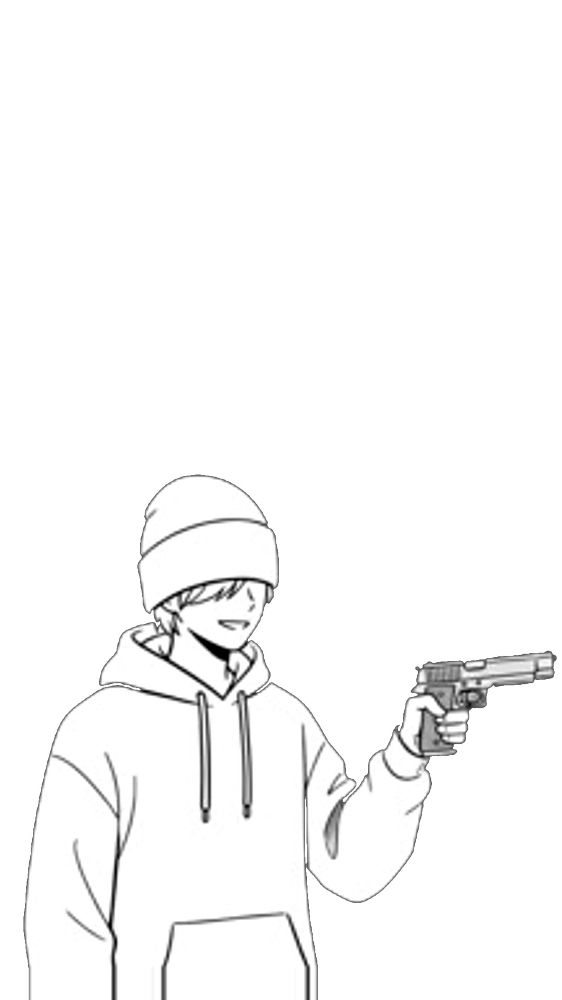
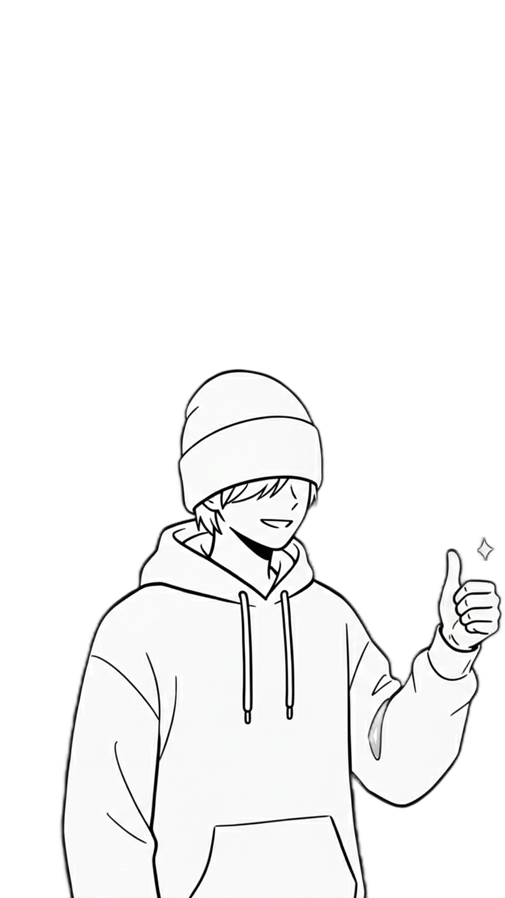
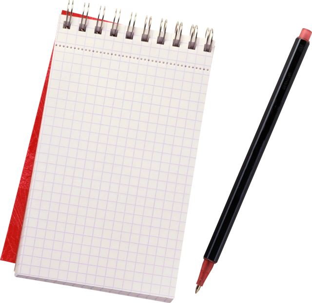
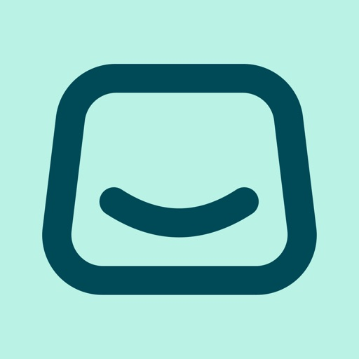
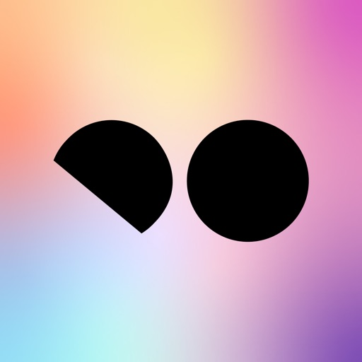
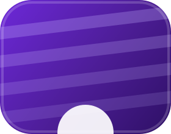
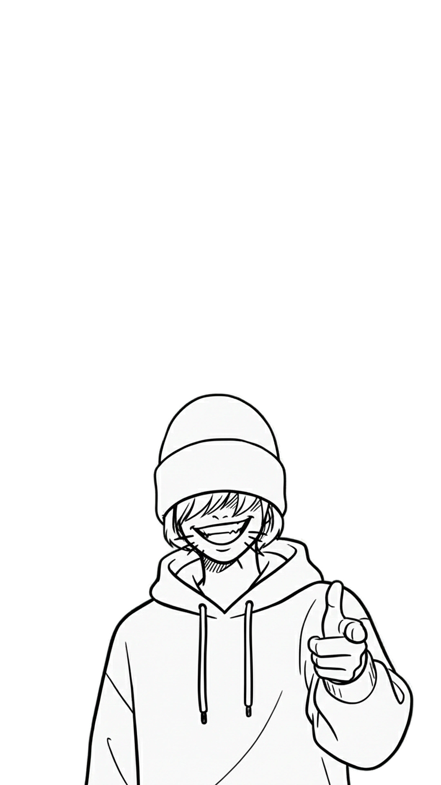

{ API }
</>
وش
يعني
API؟
الكلمة ممكن تبان معقدة وتقنية شوي


أبسط مما تتوقع!
تخيل إنك

أنت (الطاولة)
المطبخ (الأكل)
؟ ؟
؟ ؟


ممنوع تدخل المطبخ!
صح؟



النادل (الوسيط)


الـ API هو نفسه بالضبط



التطبيقات بشكل عام
نرجع للنادل!

بيانات حساسة

بدون تفاصيل سرية!




معالجة الطلب
١٠٠ ريال
دفعة ١
١٠٠ ريال
دفعة ٢
١٠٠ ريال
دفعة ٣
١٠٠ ريال
دفعة ٤

وهذا هو الـ API
بدون ما يشوف أحد تفاصيل الثاني

تابعنا للمزيد